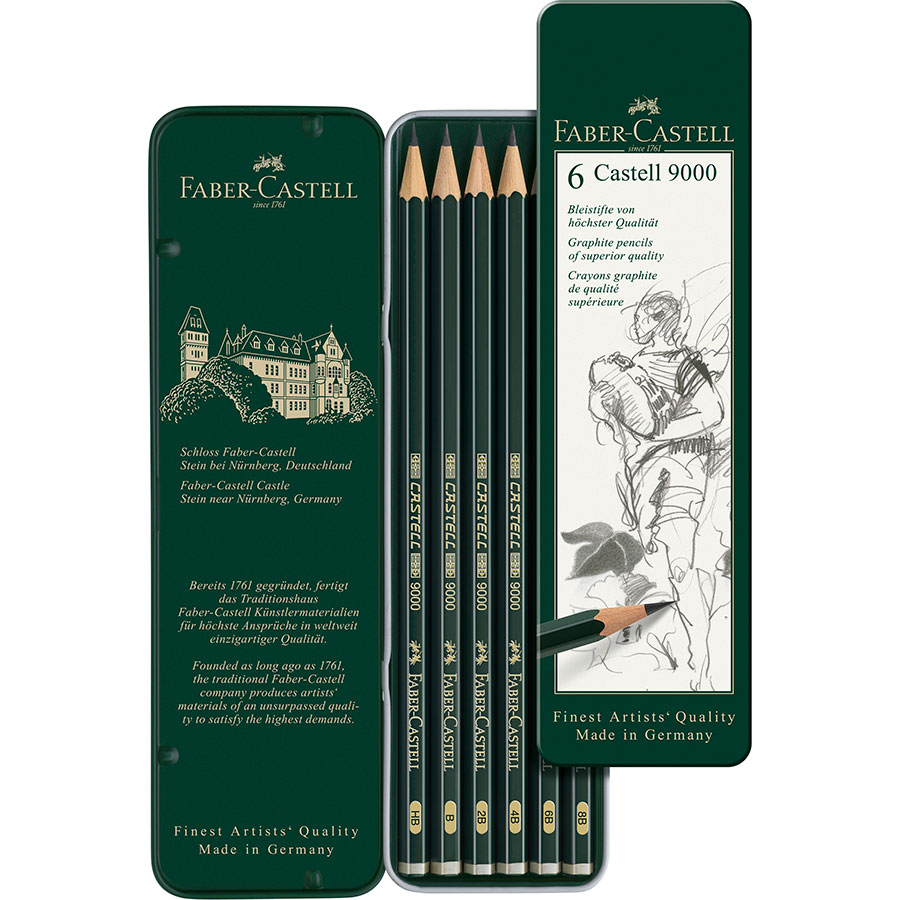
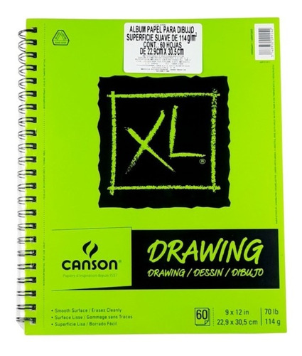
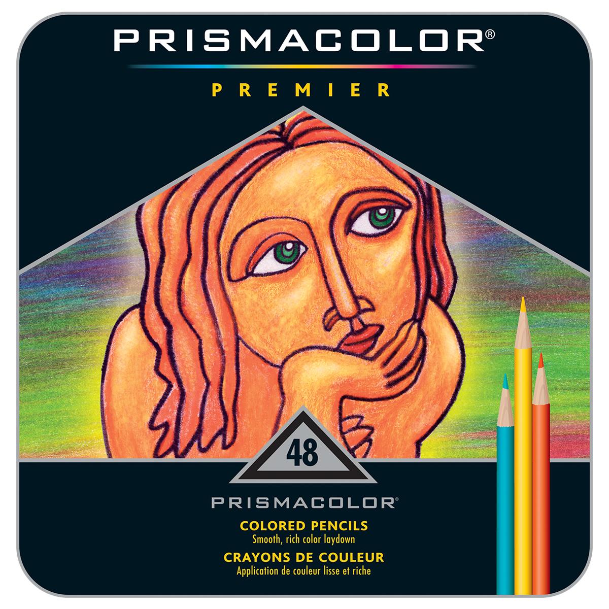
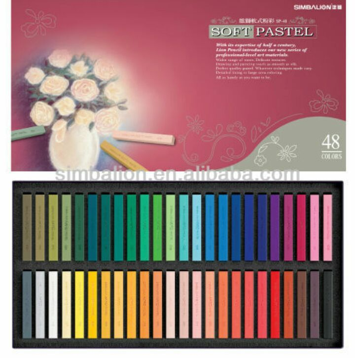
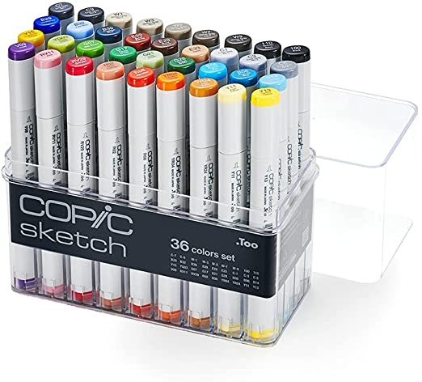
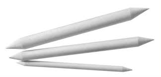
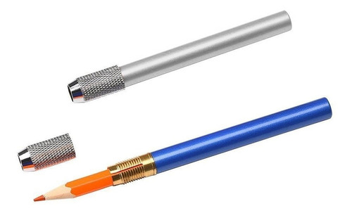
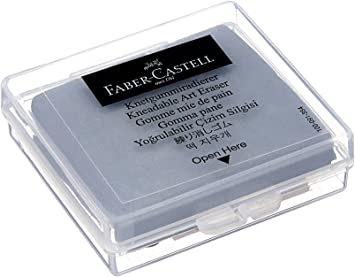

Los materiales de dibujo son tan importantes como la creatividad que poseemos ( o eso creo yo :p) y he aqui materiales que me gustan por su acabado y su duncionalidad.
La conposicion a base de grafito y arcilla varia del numero del lapiz los mas obscuros son los "B" y los mas claros son los "H". Los lapices de grafito de Faber Castell tienen una muy buena calidad dado que Faber Castell es una empresa dedicadda a la escritura.
Block De Dibujo
La clase de hojas que ofrece canson es de una buena calidad la cual nos ayudara a poder tener trazos mas sueves y definidos por la superficie lisa de sus hojas.
Crayones Prismacolor
Los crayones son una parte importante para la creacion de sketchs y prismacolor es una marca muy buena de dibujo por la composicion de sus minas se mesclan y difuminan muy bien.
Crayones Pastel
Los crayones pastel tienen un acabado unico y creo que son unos de los materiales faciles de usar y las texturas que dejan naturalmente son muy vistosas.
Marcadores Copic
Uno de los marcadores con la mas alta calidad su base a alcohol permite que los colores se mesclen de una forma increible y su acabado es increible.
Difumino
Uno de los materiales que mas me parecen utikes son stos lapices de papel que ayudan a difuminar los trazos de grafito he incluso crayones, pero mayormente se usa para lapices de grafito el cual nos ayuda a difuminar mejor .
Alarga Lapiz
Creo que su funcion es una que apesar de ser simple es muy util, el alarga lapiz nos da la opcion de tener mas mobilidad con un lapiz que ya a sido desgastado mucho dandele mas tiempo de utilidad para mi una cosa muy util .
Borrador Moldeable
nos permite clareser la tonalidad de el grafito y claro tambien borra y es muy util porque nos permite adaptarnos a espacios pequeños y evitar borrar de mas .
Para ma informacion de las marcas click en los siguientes links
Prismacolor.
Faber Castell